Galería
De la tarde a la noche
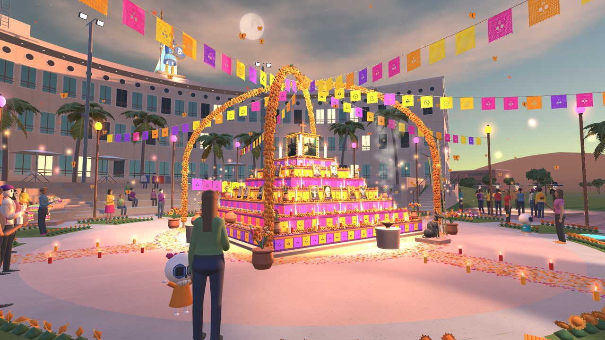
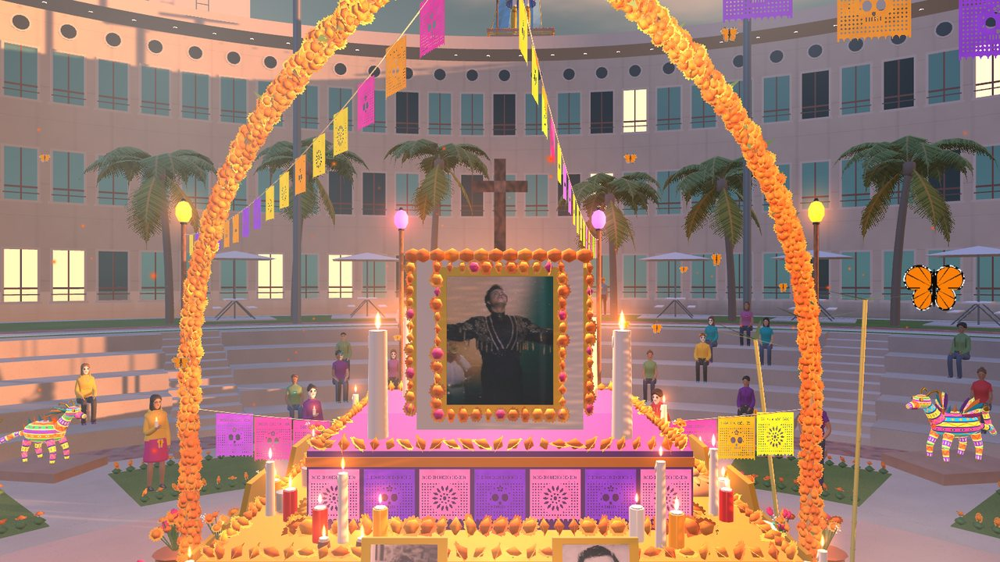
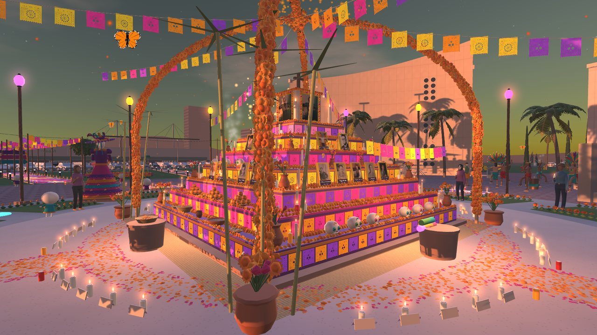

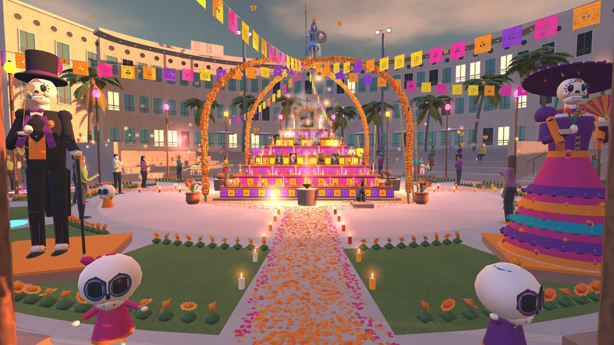
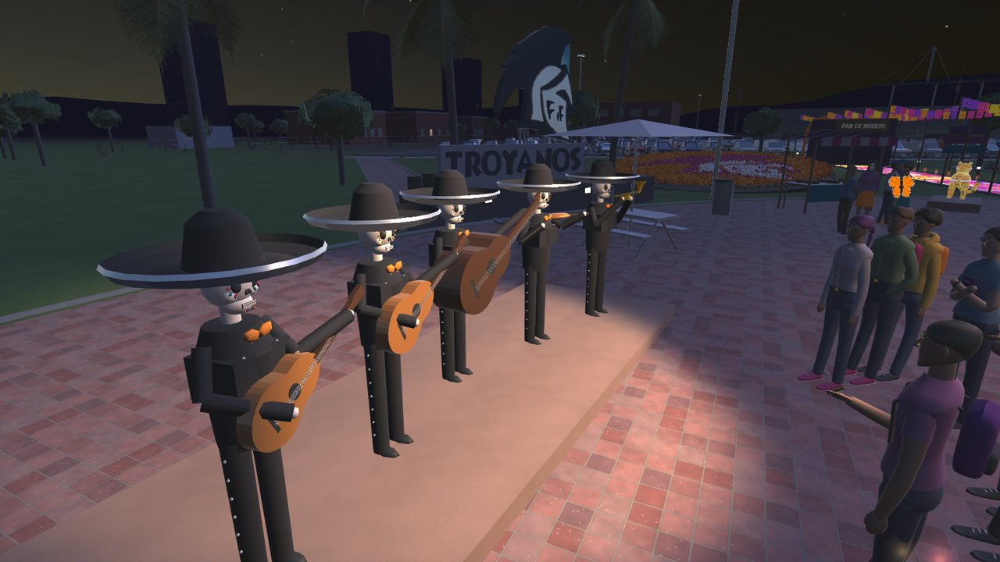


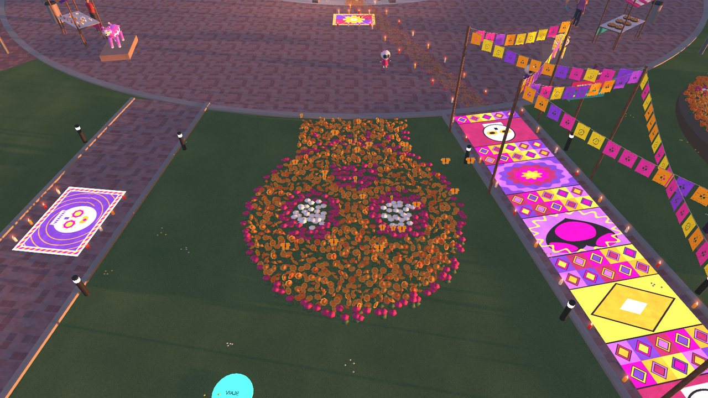
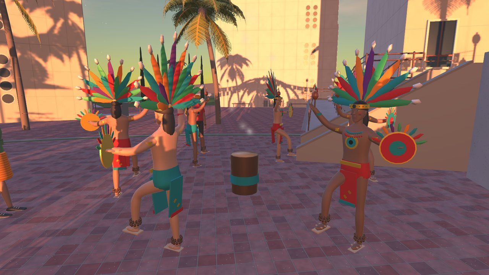
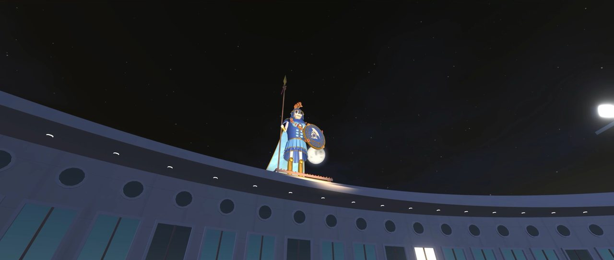

Una ofrenda de siete niveles en el centro de la explanada de la Facultad de Informática de la UAQ, recreada en Unity. No se mira: se recorre, se arma y se le deja un nombre.
Video
El recorrido
Llegas por un camino de aserrín bajo papel picado, cruzas la explanada de la Facultad y llegas al medallón central, donde está la ofrenda. Con cada ritual el cielo se oscurece, hasta que cae la noche y llegan las ánimas.
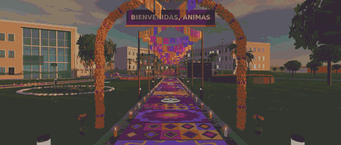
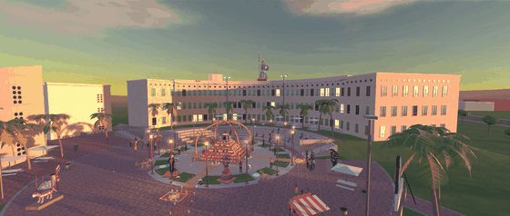
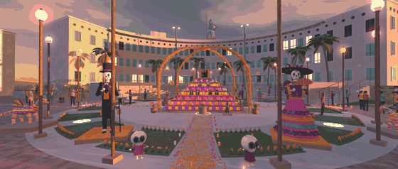
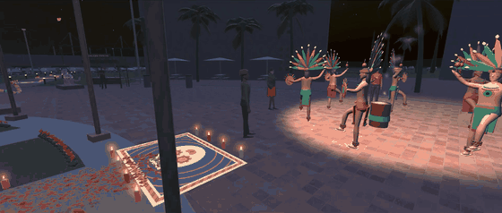
La ofrenda
Cada cara de la pirámide mira a un rumbo y guarda un elemento. Al pie de cada una hay un pedestal que activa su ritual. Con los cuatro, la ofrenda queda completa.
Se encienden las veladoras de los siete niveles y el copal.
Se sirven los vasos para que las ánimas calmen su sed.
Aparecen el pan de muerto, la fruta, el mole y los tamales.
El papel picado se despliega sobre toda la explanada.
Galería








Cómo se hizo
Tomé fotos de la explanada, los edificios, las gradas y las jardineras, y saqué las medidas de la vista aérea de Google Maps con su barra de escala. La primera versión salió 1.6 veces más grande; la corregí empalmando la vista desde arriba de Unity sobre la foto satelital.
Edificios, pirámide, comida, flores, papel picado y personajes son geometría que generan scripts de C#. Cualquier medida se corrige y la escena se vuelve a generar en segundos.
Al señalar cualquier elemento aparece su significado en la tradición y de dónde sale: INPI, Profeco, UNESCO y otras. Lo que es interpretación popular está marcado como tal.
Colores planos y una paleta cerrada de seis colores. Las figuras sencillas se leen como cartonería, que también es tradición, y la decoración deja que manden la comida, las velas y los retratos.
Controles
| Acción | Teclado y ratón | Mando |
|---|---|---|
| Caminar | W A S D | Stick izquierdo |
| Correr | Shift | LT o clic del stick |
| Mirar | Ratón | Stick derecho |
| Interactuar | E o clic | A |
| Atardecer, noche y día | N | Y |
| Recorrido guiado | X, y B para salir | |
| Reiniciar | R | Start |
| Soltar el cursor | Esc |
Descargas
Descomprime el zip y abre Ofrenda de los Cuatro Rumbos.exe. Si aparece "Windows protegió su PC", elige Más información y Ejecutar de todas formas.
Descargar .zipDescomprime el zip y la primera vez abre la app con clic derecho y Abrir, porque no está firmada por Apple.
Descargar .zipEl código completo, abierto bajo licencia MIT. Se abre con Unity 6000.5.6f1 y trae el menú para generar cada versión.
Ver en GitHub